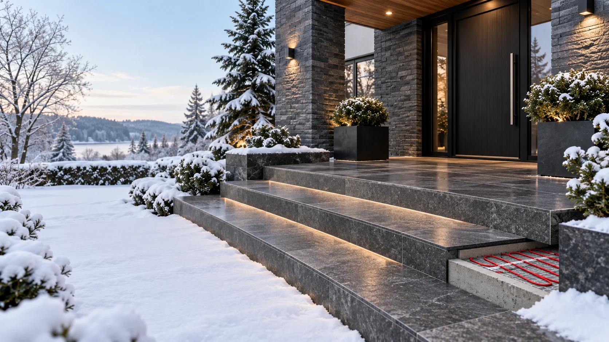
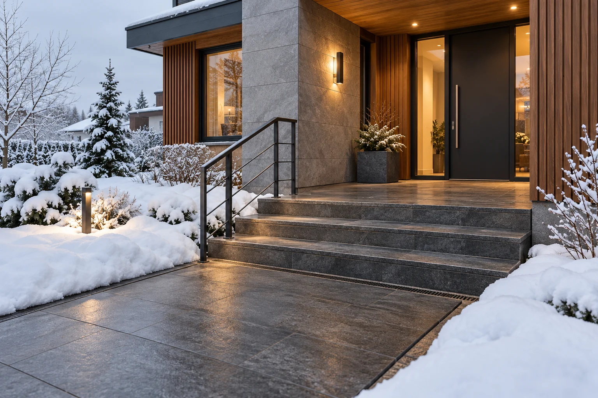
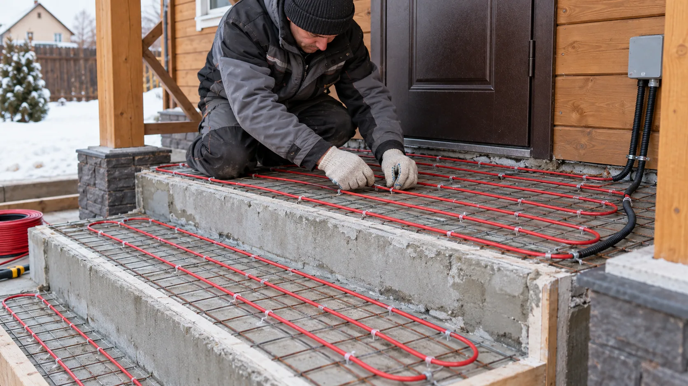

Риск падений
Скользкие ступени и пандусы опасны для посетителей.

Автоматическая система снеготаяния
Защищаем крыльца, лестницы, пандусы и площадки перед входом от снега и наледи. Рассчитываем систему под покрытие, климат и особенности объекта.
Снег, наледь и повторное замерзание воды создают проблемы даже при регулярной уборке.
Скользкие ступени и пандусы опасны для посетителей.
Лёд и циклы замерзания ускоряют разрушение плитки и бетона.
Ручная очистка требует времени, а соль повреждает покрытия.
Ручное управление не учитывает реальные погодные условия.
Без уклонов и дренажа наледь появляется рядом с зоной обогрева.
Обогреваем участки, по которым люди проходят к зданию, а также зоны отвода талой воды.

Комплексный обогрев маршрута от дорожки до входной двери.
Лестничные марши и промежуточные площадки.
Зона непосредственно перед входной дверью.
Подходы для колясок, тележек и посетителей.
Лотки, ливнестоки и путь талой воды.
Пешеходные дорожки и прилегающие участки.
Комфортный подогрев и просушка покрытия внутри.
Предотвращение ледяных порогов у проходов.

Комплексная система снеготаяния
Нагревательные секции размещаются под покрытием. Управление по температуре и влажности включает обогрев при условиях образования снега и наледи.
Подбираем согласованную систему под конкретную входную группу.
Учитываем площадь, климат, конструкцию и электропитание.
Проектируем маршруты движения и места скопления воды.
Кабель, датчики, термостаты и комплектующие.
Контролируем укладку, соединения и электробезопасность.
Помогаем с эксплуатацией и обслуживанием.
Гарантия на систему и поставляемое оборудование.
От первых размеров и фотографий до смонтированной системы.
Уточняем объект, проблемы и пожелания.
Подбираем мощность, кабель и автоматику.
Обсуждаем состав системы, условия и сроки.
Подготавливаем оборудование по спецификации.
Устанавливаем и подключаем систему.
Гарантия и техническая поддержка.
Конкретная марка и мощность подбираются после расчёта.
Для ступеней, входных групп и площадок, укладка в стяжку.
Нагревательный кабель для открытых площадок.
Для площадок без значительных механических нагрузок.
Термостаты и датчики температуры и влажности.
Исходные данные определяют схему укладки, мощность и стоимость.
Ошибки в конструкции или монтаже снижают эффективность даже правильно подобранного кабеля.
Расчёт учитывает конструкцию и климат.
Исполнение должно быть рассчитано на наружную зону.
Равномерная укладка исключает холодные полосы.
Автоматика реагирует на температуру и влагу.
Талая вода не замерзает за границей зоны.
Защита и соединения соответствуют условиям объекта.
Объекты с использованием нагревательного кабеля Lavita.
Обогрев открытой площадки со ступенями.
22,35 м² · кабель Lavita
Обогрев открытых пандусов на объектах Neste и Татнефть.
Lavita FHC-30
Системы для площадок и лестниц разных объектов.
Lavita GWS, UHC-20, FHC-30
Короткие ответы на частые вопросы перед расчётом.
Да, но важно проверить, куда будет уходить талая вода. Иногда в систему включают площадку и участок водоотвода.
Для наружных площадок управление по температуре и влаге помогает не включать обогрев в сухую погоду.
Да, если основание, кабель и монтажные материалы допускают такой способ. Схему и глубину определяют по проекту.
Размеры ступеней и площадок, материал покрытия, регион, наличие навеса и водоотвода, фотографии или план.
Инженерный расчёт
Пришлите размеры ступеней и площадки, фотографии, информацию о покрытии и городе.